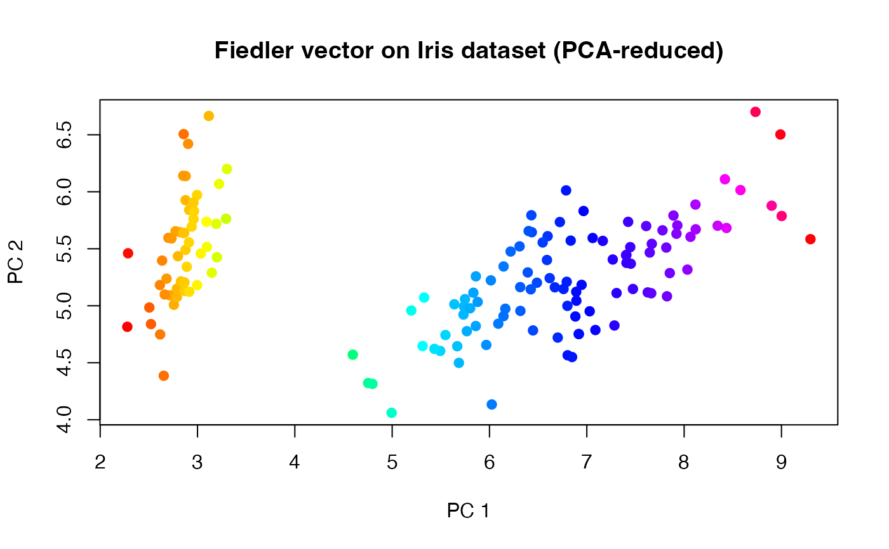

Compute the fiedler vector of a point cloud
fiedler.RdGiven a point cloud \(X \in \mathbf{R}^{N \times P}\), this function constructs a fully connected weighted graph using an RBF (Gaussian) kernel with bandwidth chosen by the median heuristic, forms the unnormalized graph Laplacian, and returns the corresponding Fiedler vector, which is the eigenvector associated to the second smallest eigenvalue of the Laplacian.
Arguments
- X
An \((N\times P)\) matrix of row observations.
- normalize
Logical; if
TRUE(default), the Fiedler vector is rescaled to lie in \([0,1]\) by subtracting its minimum and dividing by its range, mimicking the normalization convention in the corresponding Python implementation. IfFALSE, the raw eigenvector is returned.
Value
A numeric vector of length \(N\) containing the Fiedler values
associated with each point in the input point cloud. If normalize = TRUE,
the entries are in the interval \([0,1]\).
Examples
#-------------------------------------------------------------------
# Description
#
# Use 'iris' dataset to compute fiedler vector.
# The dataset is visualized in R^2 using PCA
#-------------------------------------------------------------------
# load dataset
X = as.matrix(iris[,1:4])
# PCA preprocessing
X2d = X%*%eigen(cov(X))$vectors[,1:2]
# compute fiedler vector
fied_vec = fiedler(X2d, normalize=TRUE)
# plot
opar <- par(no.readonly=TRUE)
plot(X2d, col=rainbow(150)[as.numeric(cut(fied_vec, breaks=150))],
pch=19, xlab="PC 1", ylab="PC 2",
main="Fiedler vector on Iris dataset (PCA-reduced)")

par(opar)